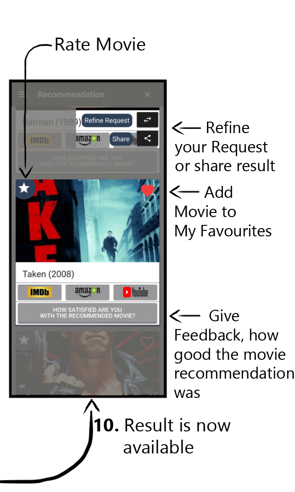
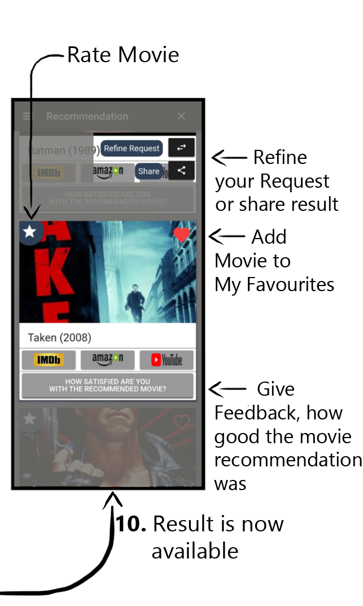
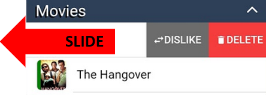

Welcome to
If you don't need the introduction tour, please press SKIP and HAVE FUN!
Do not show again

 

TIPS!
To change or delete entries, slide the entry to the left.

On the search page: Multiple entries of different categories can be inserted simultaneously.
General page options can be found in the upper right corner of the page by clicking on the icon
Congratulations!
You finished the introduction tour!
Now you are able to create your own recommendations!
Start rbz.io!
SKIP